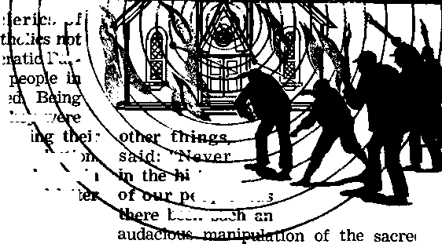

The Peace of God Can Guard Your Heart
PAGE 5
The Policeman’s Fight to Stay Honest
This Income-Tax Problem
PAGE 12
Why Anticlericalism?
PAGE 10
FEBRUARY 22, 1962
THE MISSION OF THIS JOURNAL
news sources that are able to keep you awake to the vital issues of our times must be unfettered by censorship and selfish Interests. "Awake!" has no fetters. It recognizes facts, faces facts, it is free to publish facts. It Is not bound by political ambitions or obligations; it is unhampered by advertisers whose toes must not be trodden on; it is unprejudiced by traditional creeds. This journal keeps itself free that it may speak freely to you. But it does nat abuse its freedom, it maintains integrity to truth.
“Awake!" uses the regular news channels, but is not dependent on them. Its own correspondents are on all continents, in scores of nations, prom the four corners of the earth their uncensored, on-the-scene* reports come to you through these columns. This journal’s viewpoint is not narrow, but is international. It is read in many nations, in many languages, by persons of all ages. Through its pages many fields of knowledge pass in review—government, commerce, religion, history, geography, science, social conditions, natural wanders—why, its coverage is as broad as the earth and as high as the heavens.
"Awake!" pledges itself to righteous principles, to exposing hidden foes and subtle dangers, to championing .freedom for all, to comforting mourners and strengthening those disheartened by the failures of a delinquent world, reflecting sure hope for the establishment of a righteous New World.
Get acquainted with "Awake!" Keep awake by reading "Awake!"
—— UI—H — w Published Simultaneously in the United States by the WATCHTOWER BIBLE AND TRACT SOCIETY OF NEW YORK, INC.
117 Adams Street Brooklyn 1, New York, Yj.S.A.
and in England by WATCH TOWER BIBLE AND TRACT SOCIETY, Watch Tower House. The Ridgeway London N.W. 7, England
N. H. Knorr. President Grant Summers, Secretary
Printing this issue: 3,430,000 4d. esp. (Australia, 5d; South Africa, 3|4c)
"Awiktl” li pabllthas In fUlwlat 2* h***>|a: Semi-monthly—Albanian, Chinese, Danish, Dutch, Eng-lish, Finnish, French, German. Greek, Italian, Japanese, NonredtD, Portuguese, Spanish, Swedish, Tagalog, Zulu. Monthly—Cebu-Vlsayan, Chinee, Zlncano, Korean, Mala-yalam, Polish, Tamil, fjkr&lnlaiL
Yearly subscription rates
Offices for semi-monthly edition*
America, U.S., 117 Adanus BL, Brooklyn 1, N.Y. SI Australia, 31 Barend M, Sydney, N.8.W. &A Canada, 150 Bridgeland Au., Toronto ]9, Qnt. |1 £n| land* Watch Tower Bouse,
The Ridgeway, London N.W. 7 7/-
New Zealand, 821 Nee North Rd., Auckland, 8.W. 1 South Africa, private Bag, Elandsfontein, Tvl, 70
Monthly editions oust half the above rata,
Subscriptions for subscriptions should be sent to the office In ytur country. Otherwise send your remittance to London. Notice expiration sent at tart two lanes befwty sutacrlpticiti
CHANGES OF ADO8ESS should be made thirty days before your mtnlnn date. Give u your and new address (If please, your old addreu label). Watch Tower, Watch Tower House, The Ridgeway, London N.W. 7, England.
Entered as second-class matter at Brooklyn. N.Y. Printed In England
The Bible translation used in “Awake!” is the New World Translation of the Holy Scriptures, 1961 edition. When other translations are used the following symbols will WRav behind the translation:
AS - American Standard Version AT - An American Translation AV - Auchotiaed Version (1611) .Da - J N. Darby fl version
DV – Catholic Douay Version KD – The Emphatic Diaglott - Jewish Publication Soe. Le - Isaac Lexer's wrion
Mo - James Moffatt's version Ro – J. R. Moulton's translation R8 - Ravlaed Standard Version Yp – Robert Young's version
CONTENTS
|
Open-minded or Opinionated? |
3 |
Tragedy at the Circus |
21 |
|
The Peace of God Can Guard Your Heart |
5 |
Magic’s Origin in Babylon |
23 |
|
The Policeman's Fight to Stay Honest |
8 |
Where the Doctor Comes on Wings |
24 |
|
The Superiority of Moral Beauty |
11 |
A Miracle or Hard Work? |
26 |
|
This Income-Tax Problem |
12 |
“Your Word Is Truth” | |
|
Why Anticlericalism? |
16 |
Who Are the “Many Antichrists"? |
27 |
|
Advancement in Uruguay |
20 |
Watching the World |
9 |
WE ALL have opinions on certain subjects. Their possession is one of the things that sets us far above the brute creation. Our opinions are ideas, judgments or conclusions that we reach after more or less carefully thinking about a matter. Thus we read of a columnist giving his opinion of a certain concert or play, a specialist expressing his opinion about what ails a certain patient and what should be done about it, a group of judges rendering a minority opinion. Unfortunately the opinions of many persons are based only on feelings, hearsay, snap judgments, on a woeful lack of evidence.
Regardless of what the subject may be regarding which we have opinions, we do well to be open-minded. All ideas, save those truths in the inspired Word of God, may be said to be subject to change, clarification or expansion. That is why one scientist wrote, “Science is the graveyard of ideas.” Yes, “wise men change their minds but fools never.”
To be opinionated is to be just the opposite of being open-minded. Instead of holding opinions the opinionated person is enslaved by them. Opinionated has been defined as “stiff in opinion; firm or unduly adhering to one’s own opinion,” “obstinate or conceited with regard to one’s opinions.” If we recognize that we are imperfect and prone to err and that there is oh so much that we do not know, then we will be open-minded, receptive to new ideas, willing to investigate.
OR
OPINIONATED?
As we view the pages of history we see ever so many glaring examples of persons who were opinionated. How opinionated were the opposers of the prophet Jeremiah, so certain that no calamity would befall their temple! How opinionated were the religious leaders of Jesus’ day who said that no prophet was to be raised out of Galilee! How opinionated were the Greek philosophers listening to the apostle Paul on Mars’ Hill that mocked the fact of Jesus’ resurrection!—Jer. 7:4, 14; John 7:52; Acts 17: 31, 32.
Coming to more recent times, we find like examples. Thus for more than a century after Galileo, in 1610, proved correct the Copernican theory, that the earth revolves around the sun, opinionated university professors in both Europe and in America kept on teaching the false Ptolemaic theory as a “convenient hypothesis." Harvey’s finding relative to the circulation of the blood fared similarly. According to noted physician Sir William Osler, “The Medical School of the University of Paris, at the time one of the best organized and most important in Europe, declined to accept the circulation of blood during [Harvey’s] lifetime and for some years after his death,” or for more than thirty years. Apparently that generation of professors never did see the light, so opinionated were they!
In our present century Alexander Fleming for some ten years vainly tried to enlist the aid of leading doctors in Great Britain in his discovery of penicillin. So opinionated did those men show themselves to be that Fleming’s simple explanation that he derived .penicillin from the common mold was too preposterous for them to investigate. Says a historian: “As each year went by his hopes diminished. The discovery was on the verge of falling into the abyss of oblivion together with hundreds of other potentially useful discoveries, when war broke out. The situation was reversed almost overnight. Antibacterial remedies became the center of interest on the medical stage ... Thus penicillin was rediscovered,”
Today there are ever so many persons who are so certain that the theory of evolution is true that they refuse to consider any evidence that might indicate that it is wanting in any respect. But is not such a mental attitude also opinionated? That even some of the leading evolutionists have their doubts about many aspects of the theory is apparent from a book review that appeared in the New York Times, June 25, 1961. In it one of America’s leading evolutionists, Loren Eiseley, reviews The Orion Book of Evolution, written by one of the noted evolutionists of France, Jean Rostand.
Among other things, Eiseley states and quote”: “What makes this author a happy contrast to many of his American and English colleagues is his capacity for doubt ... He is unable to convince himself that our observed mutations ‘have been able, even with the cooperation of natural selection, even with the advantage of immense periods of time in which evolution works on life, to build an entire world, with its structural prodigality and refinements.’
“ ‘I cannot,’ he continues, ‘persuade myself to think that the eye, the ear, the human brain, have been formed in this way ... I discern nothing that gives me the right to conceive the profound structural alterations, the fantastic metamorphoses that we have to imagine ... when we think of the transition from invertebrates to vertebrates , . . from reptiles to mammals.’ Are we, he questions, so saturated with the evolutionary story that we are apathetic and no longer realize the wonder of the facts we mouth? Somehow, somewhere, ‘nothing’ brought forth a world of substance and light. Similarly, life has emerged strangely, even if one avoids the word miraculously, out of inorganic substance. . . .
“Rostand doubts that we know a tithe of the hidden story. It would be well if all of us could coax our students [Eiseley is a professor of anthropology at the University of Pennsylvania] to forgo the many certainties of their science and to contemplate, for one humbling moment, the unknown darkness out of which we came and into which each one of us—like an infinitesimal universe—will dissolve in his due season.”
In view of this candid admission of doubt would it not seem that open-mindedness would require one to reconsider the case for creation as presented in the Bible? As elucidated by the publications disseminated by the witnesses of Jehovah, it is shown to be at once beautiful, convincing and comforting.

society.” Other countries have even higher suicide rates than the United States. Further indicating the vast number of persons with troubled hearts, in New York city there are some 567 practicing psychiatrists within just thirty-seven blocks. Many disturbed people have recently been calling public officials expressing the fear
WHERE was hope for peace, but A no good came; for a time of healing, but, look! terror!” How true today these prophetic words of Jeremiah! Expectantly peace is looked for, but in its place one crisis after another. .Terror grips at the hearts of even the strong and mighty as they consider the prospects of nuclear warfare. Just as Jesus prophesied for the last days, “men become faint out of fear and expectation of the things coming upon the inhabited earth.”—Jer. 8:15; Luke 21:26.
This climate of fearful expectation hangs like a dark, ominous cloud over earth’s population. Millions of persons feel that soon a cloudburst may rain down annihila-tory nuclear destruction, so they ignore righteous principles and live for the pleasure of the moment. As such thinking and misconduct increase so do broken homes, juvenile delinquency and the number of confused, disillusioned people with troubled hearts.
Two noted psychologists recently observed: “As a phenomenon that officially kills nearly 20,000 Americans each year, and in truth probably twice that, suicide is one of the gravest problems facing sothat they are radioactive. One doctor said that this new phobia, labeled nucleomito-phobia, was just another “product of the age.”
As never before men’s hearts have been troubling them. Personal problems multiply. The Scriptural counsel is: “More than all else that is to be guarded, safeguard your heart, for out of it are the sources of life.” (Prov. 4:23) Our very life depends on the condition of our heart. This is true not only of our physical heart but equally of our spiritual heart, the seat of motive or center of direction, from which source emotions are expressed. A strong, calm heart is needed by all who would successfully face the ever-worsening world situation. But where can those with troubled hearts turn in order to realize peace and comfort?
Medicine for Troubled Hearts
Some have found a measure of peace and comfort by heeding the advice to get away from civilization and spend some time in the forest. There one may follow a trail carpeted with springy pine needles. Overhead tower majestic trees, somehow emanating a sense of security and stability. The warm sun filtering from above reflects beautifully on the green leaves and foliage. How pleasant to the ear the song of the forest birds! As one strides through the woods or over a grassy meadow one feels exhilarated as one inhales deeply the clean, tangy air. What a calming, peaceful, uplifting effect such an experience has upon a person! One can just feel the peace. Certainly the Creator of these marvelous surroundings must be a God of peace. He is.
Long ago the young fugitive David spent much time out of doors as he fled for his life from King Saul. A man often beset by troubles, David spent time considering the marvelous works of creation. Jesus Christ also on occasion made the effort to get outside by himself, in quiet “lonely places,” These periods in the out-of-doors must have been calming, peace-stimulating times for these men, who were familiar with troubles.—Ps. 8:3; 19:1, 2; Matt, 14:23; Mark 1:35, 45; Luke 4:42.
The Source of Peace
It may be true that both David and Jesus drew a measure of comfort from solitude in peaceful outdoor surroundings. However, this peace in itself was insufficient to guard their hearts for the tremendous trials and troubles they had to face. While in the out of doors they prayed to the Creator of their peaceful surroundings. They unloaded their burdens upon him, as David himself was inspired to write: “Throw your burden upon Jehovah himself, and he himself will sustain you." It was the peace they received from God that guarded their hearts and sustained them. Jehovah is “the God who gives peace.” —Ps. 55:22; Rom. 15:33.
The nations have failed to gain peaceful relations with one another because they have not looked to the Source of peace, Jehovah God. Individuals looking to this world and its systems of education for guidance have likewise not come to know real peace. Peace is defined as “calmness of mind and heart; serenity of spirit; harmony in human or personal relations.” Such peace is a need of mankind. This world cannot satisfy this need, for it has not come to know the Source of peace.
Jesus had peace. With a calm, courageous heart and serene spirit he faced the trials of the final day of his earthly ministry. He knew his disciples would need this same peace in order to endure the trials that lay ahead for them. Therefore on his last evening with his disciples, after instituting the memorial of his coming death, he spoke so as to impart his peace to them. He said: “I leave you peace, I give you my peace. I do not give it to you the way that the world gives it. Do not let your hearts be troubled nor let them shrink for fear.” What calming, peacestimulating encouragement from one who knew he was to die on a torture stake the following day! Jesus concluded, saying: “I have said these things to you that by means of me you may have peace. In the world you will have tribulation, but take courage! I have conquered the world.” Finally Jesus led his disciples in prayer to “the God who gives peace,” petitioning that he keep them in peaceful unity.—John 14:27;16:33;17:20-26.
Jesus and his first-century followers displayed peace that the world from that time to this has not come to know or understand. With the ‘peace of the Christ controlling in their hearts’ early Christians dwelt together in unity, showing kindness, compassion and love for one another. (Col. 3:12-15) This peace allowed them to face hungry lions in the Roman arena with courageous hearts. Caesar did not give them this peace. No worldly school taught it to them. It came from Jehovah God, to whom they prayed and in whom they trusted. They received it in fulfillment of the promise: “The inclination that is well supported you will safeguard in continuous peace, because it is in you that one is made to trust.”—Isa. 26:3.
ARTICLES IN THE NEXT ISSUE
• Why Teach Children Religion?
* Kenya's Calamitous Famine.
• Hereditary Tendencies.
* What Every shioker Should Know. • How to Teach in a Public Discourse.
The peace of God can guard the hearts of all those who pray to and trust in him. “Do not be anxious over anything, but in everything by prayer and supplication along with thanksgiving let your petitions be made known to God; and the peace of God that excels all thought will guard your hearts and your mental powers by means of Christ Jesus.” This peace of God can guard your heart and mental powers. However, to receive it you must be taught by Jehovah.—Phil. 4:6, 7.
Education That Brings Peace
The prophecy of Isaiah says: “All your sons will be persons taught by Jehovah, and the peace of your sons will be abundant.” The apostle Peter showed that peace comes through accurate knowledge, when he said: “May undeserved kindness and peace be increased to you [how?] by an accurate knowledge of God and of Jesus our Lord.”—Isa. 54:13; 2 Pet. 1:2.
For you to receive this knowledge that brings peace you must “keep seeking for it as for silver, and as for hid treasures you [must] keep searching for it, in that case you will understand the fear of Jehovah, and you will find the very knowledge of God." Through such a diligent study of the Bible you will come to love Jehovah’s law, just as did Jesus and his followers. Its righteous principles will sink into your heart and you will want to live by them. Serving Jehovah and being obedient to his law will become the chief objective in your life. This will bring you peace, for, declares the psalmist, “abundant peace belongs to those loving your law.”—Prov. 2 : 4,5;Ps. 119:165.
This soothing, assuring, precious gift of peace, one that “excels all thought,” will guard your heart, making it courageous and strong and able to sustain you through any crisis or trial that may lie ahead. This peace enabled Jesus to face a torture stake; Daniel, a den of lions; the three Hebrews, a fiery furnace; and in this day, thousands of Christian witnesses of Jehovah, fiendish torture and death in Nazi concentration camps and Communist prisons. The sustaining hope of all these faithful men and women has been Jehovah’s promised reward of life in a new world of righteousness, a promise recorded in his Word: “There are new heavens and a new earth that we are awaiting according to his promise, and in these righteousness is to dwell. Hence, beloved ones, since you are awaiting these things, do your utmost to be found finally by him spotless and unblemished and in peace.”—2 Pet. 3:13, 14.
Do you desire the peace of God, peace so strong that your heart will “not fear, though the earth undergo change and though the mountains totter into the heart of the vast sea”? (Ps. 46:2) Soon this earth will experience such an earthshaking change, no, not by a downpour of nuclear weapons, but by the unleashing of natural forces at Jehovah’s war of Armageddon that will shake the very foundations of the earth. Only the peace that God gives will be able to guard your heart during that time of great trouble. So prepare now to survive then. Strengthen your heart by taking in an accurate knowledge of God and his purposes. This will bring you peace of mind and comfort now, and will equip you to face the great time of trouble ahead.

A VETERAN policeman once said, “The biggest thing we have to fear is corruption.-It’s the cancer that can destroy a police department.” Most recent of the major police scandals that have rocked nearly
every major American city is the much-publicized Denver, Colorado, debacle. Early last November a count showed that forty-one patrolmen, one sergeant and one detective—nearly 6 percent of the Denver police force—were arrested for operating the biggest burglary ring in the city’s history. There were at least five police safecracking teams using squad cars and the police radio network to execute burglaries. In fifteen years more than a quarter of a million dollars and untabulated amounts of merchandise had been stolen. Police officers were also involved with gambling and prostitution.
In a plea for understanding, one of the convicted policemen wrote from his prison cell'. “The next time an officer goes by your home or place of business look at him. He is a man who will risk his life today for one of your children, yet his head is hung in shame.” Policemen in other cities could understand. In January, 1960, a talkative thief exposed thirteen Chicago policemen who were arrested as accomplices in a string of robberies. When Cleveland did some housecleaning a few years ago, nine high-ranking officers went to jail and thirty-three other policemen had to resign, Los Angeles’ fine police force was not always so commendable. It took a retired marine general to come in and restore discipline and the public’s confidence. For years the Philadelphia police department had a reputation for dishonesty and inefficiency. In 1952 a new police head undertook reforms. Within six years 3,000 of the 5,000-man force were replaced!
The New York police department has a long history of scandals erupting periodically. In the 1890’s a police captain revealed that he had collected money from gambling houses, saloons and brothels. Corruption came to light before the first world war and in the 1930’s. A 1943 outbreak involved 111 officers of various ranks who were charged with taking bribes. Scores of New York policemen were indicted in 1950 when bookmaker Harry Gross testified that he paid $1 million for protection. As recently as 1959 twelve New York officers were arrested for various crimes, including extortion and a rape murder.
The Hard Fight
There are about 316,000 law officers of all kinds in the United States, A very small percentage of them will ever become outright criminals. Many of them are very dedicated men. But all of them, by the nature of their profession, face a constant fight to stay honest. Many a rookie has been disillusioned after graduation from the police academy. Though instilled with the desire to earn an honest living while pursuing the career of law enforcement, he may soon learn that police work involves a number of “extenuating factors.”
Suppose, for example, his immediate superiors—who will pass on his deportment during probation—have come to the conclusion that one can accept gratuities and still be a good policeman. They may rationalize that there is nothing really wrong with taking a gift; that it is something smart people everywhere are doing. Is the rookie going to stick by his resolve to be honest, or will he fall in line with the practice of taking free cigarettes, meals, coffee, turkeys and liquor? Dare he antagonize the men who will fill out his probationary report? This is the problem that has faced rookie policemen where dishonesty has gone unchecked in a police department.
The hard life of a policeman does not help matters. To live in peril from armed criminals and trigger-happy juveniles is bad enough, but the patrolman faces much more. While he fears to be too hasty about shooting an armed opponent, he also does not want to give his associates the impression he is a coward. There is also the matter of his home life. Can a policeman witness no end of sordid crimes and all kinds of tragedies without becoming hard-boiled, if only in self-defense? And if he becomes tough in order to preserve his mental balance, how is he to succeed in playing the role of affectionate husband and fond par
ent, which wife and children demand of him? Even his friends will introduce him to people as “Mr. ----; he’s a police
man.” All this makes him a man apart from his fellow citizens. He belongs to a fraternity of career men who suffer a high rate of ulcers, suicides and divorces. Since his fellow officers understand him and sympathize with his fears and tensions, he must be accepted as one of them. This compulsion to belong may force him to condone dishonesty if it happens to exist in his police department.
Nor is that the only source of pressure that closes in on an honest policeman. Suppose his house is mortgaged, or there are heavy doctor bills. Perhaps he wants to send his son to college. What if his police salary just does not cover it? Regulations may forbid “moonlighting,” taking on outside work. Handouts and payoffs may seem to be the answer. Where policemen have developed a greed for money, as in the recent Chicago scandal, they may stoop to burglary. Others, as in the Denver case, may take to looting stores where there have been break-ins. Last March a New York detective with nine police commendations and a patrolman were arrested for attempted extortion of a chauffeur who had been involved in a street brawl. They offered him freedom from arrest for $250. He paid them with marked bills and they were caught.
The large number of dedicated policemen face a hard fight to maintain their honesty and morale. In some cases, “too zealous” performance of duty has aroused political interference, resulting in a reprimand or even an unwanted transfer to another branch of police work. Arresting the “wrong people” has also caused police officers to suffer loss of promotion and the pay increase that would have come with it. Patrolmen are not encouraged to enforce the law when they come into court and encounter judges who are overly sympathetic with offenders. The demoralizing effect of such things was pointed out by the convicted Denver policeman who said: “Either you enforce the law or you forget it, I couldn’t enforce it so I forgot it.” Another stated: “I was really discouraged and disillusioned about the ‘glory badge’ stuff. So I took the big dive.”
Remedies?
One veteran police commander believes that police dishonesty is not out of hand as long as other policemen are reporting it. Nevertheless, the problem concerns all police departments and much thought goes Into possible remedies. In some cities defective recruiting procedures have been allowing men ill-suited and insufficiently educated to enter police work. Better screening has been urged as well as higher moral and educational standards. Also, if there is to be an efficient police department, it must be entirely free from political interference. However, such interference is often traditional and is not easily conquered. Criticism has also been leveled at Civil Service procedure, judicial reversal of dismissals and police unions that can force a department to retain a man it considers unfit for the job.
Several years ago the New York police department organized a Chief Inspector’s Squad, which soon came to be called the "Gestapo,” It was not pleasant work. The squad would investigate a policeman’s private life, check out a civilian complaint of police extortion or question a patrolman on his beat But it got results. Recently the Chicago force established a similar unit that serves as a division of internal investigation.
To induce officers to speak up, a department may give promotions to policemen who expose corruption among their fellow officers. Sometimes suspected policemen are transferred to different precincts to break up ties with lawless elements. In Denver, however, this merely spread the corruption. Another suggestion heard recently is stiffer sentences for convicted policemen. Frequently mentioned is the matter of better police wages. Certainly men exposed to constant danger while upholding the peace and safety of the community deserve to be amply rewarded. In addition, in some departments there is a real need for more men to serve as supervisors and inspectors. It is very difficult to maintain discipline and efficiency in a semimilitary organization when too many patrolmen come under the direct supervision of only one man.
The repeated police scandals Involving payoffs from gamblers have put the spotlight on present antigambling legislation in the United States. The present laws allow Americans to place bets at a racetrack but not on a street corner. A prominent judge recently criticized this double standard and recommended that gambling laws be separated from the body of criminal law on the theory that a gambler is not as bad as a burglar or a killer. It is suggested that gambling be legalized, thereby doing away with the need for bookmakers to pay patrolmen to look the other way. But if that would solve the bookie problem (without luring many more into gambling), would similar changes in legislation correct other sources of corruption? Is drag addiction to be legalized? Some have urged that clinics be established where addicts could get needed doses, thereby eliminating the gigantic narcotic racket. But would it invite many more people to take up the habit? And what about prostitution? Are traffic laws to be done away with too, so there is no possibility of payoffs for traffic violations? Obviously society cannot abolish all law in order to prevent police corruption. Inasmuch as there must be laws, there are opportunities for payoffs. This brings up the matter of the public’s role in the policeman’s fight to stay honest.
The Public’s Responsibility
Mayor Richard Batterton of Denver made an interesting comment on the scandal in his city: “It is not only a tragedy in itself but In what it indicates about the morals of our country as a whole.” In this connection a remark by Philadelphia’s Mayor Richardson Dilworth is noteworthy: “For every politician who can be bribed there are at least ten businessmen waiting in line for the privilege of bribing him.” If these businessmen want to stay open after legal hours, sell on Sunday where prohibited by law, or park in no parking zones, they will also be waiting to bribe the patrolman on the beat. “The wonder is,” said one police commissioner, “not that cops go crooked, but that so many of them stay honest.”
The policeman is a representative of a cross section of the public from which he came. Fundamentally he is just as honest, or crooked, as a typical cross section of that public. He has gone to the same churches, the same public or parochial schools. He reads the same newspapers and has many similar interests, including the desire for a comfortable income and some pleasures in life. But when there is a general moral breakdown, as exists today, and citizens everywhere are working overtime at being dishonest, what can society expect from its police? Donning the blue uniform does not make a man honest any more than honesty comes to the shopkeeper by tying on his white apron or wearing a gray business suit. Like the businessman, somewhere along the line each police officer has to make a decision, and that will show what he is made of. It is a decision that faces, not only policemen, but the doctor, the lawyer, the garage mechanic, the corner druggist, the college student, the boy and girl in high school—it faces everyone. In the policeman’s case, since he is a symbol of law and justice, he should surely want to make the right decision for his conscience’ sake and to avoid a life of hypocrisy.
But how can he make this choice of honesty when society all around him has fallen to the condition of ancient Jerusalem, of which the prophet said: “Your princes are stubborn and partners with thieves. Every one of them is a lover of a bribe and a chaser after gifts”? (Isa. 1:23) The answer lies in cultivating something higher than the love of money. It lies in obedience to higher laws than the community’s. He must cultivate love of God and neighbor and respect for godly principles, including the one that reads: “You are not to accept a bribe, for the bribe blinds clear-sighted men.” That is the only way anyone can win the fight to stay honest,—Ex. 23:8.
THE SUPERIORITY OF MORAL BEAUTY
Dr. Alexis Carrel, distinguished scientist, comments on the superiority of moral beauty in his book Man, the Unknown: “Moral beauty Is an exceptional and very striking phenomenon. He who has contemplated it but once never forgets its aspect. This form of beauty is far more impressive than the beauty of nature and of science. It gives to those who possess its divine gifts, a strange, an inexplicable power. It increases the strength of intellect. It establishes peace among men. Much more than science, art, and religious rites, moral beauty is the basis of eivUization/'—Pages 130, 131.
iTOte’

April 15,1962, is the unpleasant deadline for many of the more than eighty-four million taxpayers in the United States. Their Federal Income-tax returns must be filed by that date. Filling out this tax return is an ordeal that involves many painful hours of mathematical computations and strenuous efforts to understand complex and wordy tax forms and instructions. But what is most painful is the generous bite the government takes from the taxpayer’s income —20 percent for those in the lowest bracket and 91 percent for those in the highest bracket. But as unpleasant as taxes are, they are generally recognized as being necessary.
Governments need money in order to function and to provide the many benefits people have learned to expect from them. The bulk of that money comes from taxation—involuntary contributions from the people for the upkeep of their respective governments. Taxes are their payment in return for the maintaining of law and order and other services.
Because of these services and the right a government has to tax its people, Jesus Christ said: “Pay back, therefore, Caesar’s things to Caesar, but God’s things to God,” (Matt. 22:21) This command obligates
Christians to pay taxes. Caesar mints the money and provides services for which he is entitled to receive a portion of that money back in taxes. Recognition of this by a Christian means he will pay taxes on all his taxable income. He will not become a lawbreaker by purposely failing to report a portion of it or by falsifying his report.
What to Report
In the United States all earned and unearned income is usually subject to taxation. Earned income is the money or property that you may receive in return for personal services such as wages and salaries. Unearned income is what you receive from the sale of property or from income that comes from property such as real estate, rentals, investments, and so forth.
If, in addition to your regular wages, you receive a small income from practicing a hobby during your spare time, this income must be indicated on your tax return. So also must tips, commissions, fees for service, bonuses, rewards, interest on bank accounts and bonds, canceled debts, dividends and capital gains from securities and other holdings, amounts recovered from bad debts, vacation allowances, and so forth.
When you win a prize or are awarded an all-expense tour, the fair market value of the prize or tour must be estimated and reported as income. The value of turkeys, hams, and so forth, that often are given to employees on holidays are not required to be reported with your income, although the employer is permitted to deduct their value from his income as a business expense. In the event that he should distribute cash, gift certificates and similar things that can/be easily converted into money, you are required to report these things as income.
The financial gain you receive from selling your house is taxable income unless you purchase another house for an equal or greater amount within one year. Since your house, furnishings, securities and automobile are classed as capital assets, any financial gain from the sale of them is usually taxable. When they have been held for six months or more only one half of the profit you make is subject to taxation. This is an attractive feature about capital gains.
You must carefully ascertain all your sources of income, whether you receive money, goods or services. If someone does work for you in payment for services you rendered him, do not overlook his services as taxable income. The market value of them must be included in the amount you report.
Willingness to obey Caesar’s tax laws does not mean you should pay more than is required. You do nothing wrong by searching for every possible legal means to reduce your tax bill. On this point consider what the Lord President of the Court of Session in Edinburgh, Scotland, said regarding the British taxpayer: “No man in this country is under the smallest obligation, moral or other, so to arrange his legal relations to his business or to his property as to enable the Inland Revenue to put the largest possible shovel into his stores. The Inland Revenue is not slow—and quite rightly—to take every advantage which is open to it under the taxing statutes for the purpose of depleting the taxpayer’s pocket. And the taxpayer is, in like manner, entitled to be astute to prevent, so far as he honestly can, the depletion of his means by the Inland Revenue.” The same can be said of taxpayers in other countries.
Exemptions
A basic exemption of $600 is granted the American taxpayer. Anything earned above this amount is taxed according to a sliding scale, with the tax rate increasing with greater income, requiring those who have the most to pay the most.
If you are married, you may avail yourself of an additional exemption of $600 by filing a joint tax return with your wife. It matters not whether she earned anything or not. In some instances it is advisable for husband and wife to file separate tax returns, such as when both have capital losses to deduct. Each can then deduct up to $1,000, whereas the joint return is limited to $1,000. For each child you get an additional $600 exemption.
Suppose you have a son under nineteen years of age or one who was in school for five months of the year and earns more than $600 in his spare time. If you provide more than half of his support you are entitled to claim a $600 exemption for him. Because of his earnings he must file an income-tax report of his own, but he may also deduct the exemption of $600. Thus, in this case, the basic exemption is used twice on the same person.
In addition to the basic exemption you are granted for yourself, you are entitled to an additional $600 if you are sixty-five years of age or over, and the same is true for your wife. On a joint return, that would give you an exemption of $2400. Blindness entitles you to still another exemption of $600.
The death of your mate does not deprive you of her exemption for that year. The same is true of a child that dies shortly after birth. The exemption may be claimed for the child even when it lives only momentarily. Suppose the child is born in December and dies in January of the next year, you are entitled to the $600 exemption on your tax return for the dosing year as well as $600 on your tax return for the next year.
Let us say you have an aged dependent in your house who receives $650 from a Social Security pension and an annuity of $500. Although this totals more than the basic exemption of $600, you may claim the dependent exemption if you provide more than half of the person’s support, because the Social Security pension of $650 is tax exempt. Suppose the dependent is your father or mother, who is being supported by you and two brothers, with no one providing more than half of the support. One can claim the exemption, nevertheless, if he provides at least 10 percent of the support and the others sign a waiver on the claim.
What you receive as gifts is not to be considered as taxable income. This includes a bequest of a specific sum or of specific property. But if the property you receive as an heir produces income, that income is taxable. The money you receive from a life insurance policy upon the death of the insured is also exempt from income tax.
Persons with much investment capital often put a generous portion of it into State and municipal bonds, since the interest paid by such bonds is tax-exempt income. In the case of stocks this holds true for the first $50 a person receives in dividends each year plus 4 percent of the balance.
Deductions
You most likely want to avail yourself of every deduction granted you by the government Yet many taxpayers, due to ignorance of the many deductions for which they may qualify, unwittingly pay more than is required. It has been estimated that American taxpayers pay every year approximately four billion dollars more than they owe. Because of the savings that can be had by knowing all possible deductions, some persons feel that it pays to hire a tax expert to help them make out their tax return. They feel that the money he saves them more than pays for his fee. Suppose we consider some of the deductions that may be able to help you.
Are you buying a home? Do not overlook the interest you pay on the mortgage. It is a permissible deduction. So also Is the interest or carrying charge you pay when buying something on the Installment plan. The limit is 6 percent of the average unpaid balance due.
Contributions to qualified organizations, listed in the Internal Revenue, publication entitled "Your Federal Income Tax,” are permissible deductions. If you list them instead of taking the standard deduction of 10 percent, you may deduct as much as 20 percent of your adjusted gross income, that is, your total income minus exemptions and deductions claimed. An additional deduction of 10 percent is permitted for contributions made to religious organizations, tax-exempt educational institutions and tax-exempt hospitals. In the event that all one’s contributions were, made to such institutions, he would be entitled to deduct as much as 30 percent.
For whatever claims you make be able to substantiate them with proof. Canceled checks, check stubs or a daily record of your expenses is helpful when you are questioned by a tax examiner.
The law allows for the deduction of certain transportation expenses resulting from your business. It also permits travel deductions for expenses incurred in charitable religious work such as missionary activity. When you travel outside your community to engage in religious activity, such as to a religious convention, the transportation costs, food and lodging become deductible items on your income tax return. Even used clothing and other items contributed to a charitable organization are deductible at their fair market value. In such instances the expenses are classed as religious contributions and are permissible within the 30-percent limit already discussed.
During the course of a year you pay out a substantial amount in State and local taxes. These can be deducted on your Federal tax return. Such taxes include State income tax, admission taxes, real and personal property taxes, automobile license fees, poll taxes, stamp taxes, State gasoline taxes, use taxes and local and state retail or sales taxes.
Do not pass over possible deductions from casualty losses and theft. Damage done by fire or storm to your car, home or a valuable tree is a legitimate deduction. What it would cost to repair the damage is a fair estimate of what to deduct, provided that insurance does not cover the damage. If it does, you can make no deduction. Stolen articles are also deductible, provided that you have satisfactory proof that they were stolen and not mislaid.
Have you had any medical expenses? Give them careful consideration for possible deductions. When they exceed 3 percent of your adjusted gross income almost all of them are deductible. That includes the cost of diagnosis, treatment, limited medical supplies, eyeglasses, dentures, hospitalization, nursing, whether paid to physicians, surgeons, dentists, optometrists, chiropractors or osteopaths, also premiums for accident and health insurance. For persons over sixty-five years of age the limit of 3 percent is removed. Transportation costs involved in getting medical treatment are another deductible cost. When compensation is received under a sick-benefit plan, you can deduct as much as $10 when you take an afternoon off from work for medical treatment of an injury.
Special work clothes that cannot be used in ordinary wear, such as helmets, work glaves, rubber boots, special uniforms, and so forth, are necessary business expenses that are legal deductions on your income tax return. So also are the expenses for educational courses for improving your skill in your employment or to meet requirements established by your employer.
Income splitting is often found advantageous by persons who own their businesses. By making the various members of your family, including infants, equal partners, you can divide up the income from your business and thus reduce, by a sizable amount, your personal income tax. Another method is to create a trust for the benefit of a minor child in your family. Since the trust pays its own income tax, the father reduces the amount of his taxable income. Several of such trusts can mean a big saving for the man who receives a large income.
Whether you are in the upper- or lower-income brackets, the yearly income-tax return is an unpleasant problem. Claim every possible exemption and deduction to which you are entitled. Make your report neat and easily read, double-checking your mathematics for accuracy. Have convincing arguments and adequate records to support your claims in case a tax agent questions you. Honestly fulfill your tax obligation to Caesar, and then heave a sigh of relief that the income-tax problem is behind you for another year.
m

ANTICLERICALISM
When Roman Catholic c Puerto Rico ordered that to vote for the Popular Democracy in the 1960 elections, the
Protestant lands were shocke unaccustomed to clericalism, theV w stunned to see clerics openly usi religious authority to influence an election The dire warning that it would be sNgin to disobey the order of the pastoral lett violated the principles of free elections. The reaction of the Catholic people of
Puerto Rico was also surprising to Protestant eyes.
Instead of obeying the order, a majority of the people voted for the party that was denounced by the clergy. They refused to support the clerically endorsed Catholic Action Party. The political meddling of the clergy stirred up anticlerical feelings in their flocks. In a few instances priests were booed and in others some, devoted Catholics walked out of the churches. The editor of the San Juan Star wrote: “Because this pastoral letter is ... an affront to the people who have built a model democracy, we hope Pope John XXIII will transfer the Bishops to posts outside Puerto Rico, and that they will be replaced by representatives of Catholicism who recognize the indispensability of the principle of the separation of church and state in a democracy.’’
After the defeat of the Catholic Action Party a legislative committee made an investigation of the elections and, among
s bf
Pat-
Oli
tl
been sued
an
ir
in
istco.
people have
the interest of the temporal ends of our collective life. Every action of the highest dignitaries of the church, as also of the priests and prelates during this period, constitutes the most serious challenge that has ever been thrown down to our people, a challenge which tends to destroy our democratic and civic prerogatives. . . . The right of the people and of the electorate of Puerto Rico to establish and guarantee a government of the people and for the people, the basis of all democracy, would be destroyed and in its place we would have a government of clerical decree.”
The anticlericalism that manifested itself in Puerto Rico was not from Communists but from indignant Catholics. Their opposition to the political meddling of the priests did not mean they were turning against their religion. This is seldom the case in the many Catholic countries where there have been instances of anticlerical-ism.
Elsewhere in the Americas
Even dictators who agree to union of church and state and grant many privileges to Catholic clerics can eventually become incensed at clerical political activities. The former dictator of Argentina, Juan Perdn, found this to be the case. Although a Catholic, he took anticlerical action in 1954 by charging three bishops with attempting to undermine his government. From then until his overthrow the Catholic clergy were confronted with repeated acts of anticlericalism. Clerical teachers were purged from the state-controlled schools, the government subsidy to Catholic schools of $6 million a year was withdrawn, religious education was abolished in public schools, all religious institutions were made subject to taxation, a bill was passed to separate church and state, many priests were arrested, two of the highest church dignitaries were deported and mobs burned several churches. Again this was the action of Catholics, not Communists.
Former dictator Trujillo of the Dominican Republic was also closely allied with Catholic clerics for many years. In 1954 he signed a concordat with the Vatican granting special treatment for the Catholic clergy and religious of his country. But after the arrest of a Catholic seminarian in December, 1959, on charges of possessing homemade bombs and then an attempt on his life in January of 1960, his friendly attitude toward the clergy changed. It appears that he had reasons for concluding that the clerics were interfering in the political affairs of his government. Although a Catholic, he launched an anticlerical campaign. Daily the priests were attacked verbally by the government radio Caribe. In a period of five months, more than fifty priests were expelled from the country for political reasons by this indignant member of their flock.
In view of these manifestations of anti-elericalism by Catholics who resented political interference by clerics, it is not surprising that Cuba is also experiencing a wave of anticlericalism. In this country where 90 percent of the people are Catholic, the clergy have been showing displeasure over the government. They cannot influence it as they would like to. The present rulers have accused them of interfering in the political affairs of the state and have warned them to “stick to religious and philosophical issues.” As in other predominantly Catholic countries they apparently have not. Consequently, many priests have been arrested and more than two hundred Spanish priests and nuns have been deported to Spain.
To the south of Cuba in the country of Colombia, a violent display of anticlericalism manifested itself in 1948 after the assassination of the Liberal leader Jorge Gait&n. Almost all the churches in the city of Bogota were either destroyed or damaged. The anger of the crowds that rioted for eight days was also vented on the residence of the papal nuncio, laying it in ruins. This popular display of anticlericalism was not by people who hated the Catholic religion, but by Catholics themselves.
Mexico
A long history of oppressive clericalism in Mexico prepared the way for repeated eruptions of fierce anticlericalism in that country. A particularly sore spot with the poor people there was the enormous wealth accumulated by the church. The eighteenth-century bishops of Puebla, Valladolid and Guadalajara were among the richest men in Mexico, In his book A History of Mexico, Professor Henry Bamford Parkes states: “Early in the nineteenth century it was estimated that more than half the land in use in Mexico had become the property of the clergy. The Church, moreover, was a money-lending institution, owning at least two-thirds of the capital in circulation.” In view of this it is understandable why Jose Morelos, one of the leaders of an abortive revolution against Spanish rule in the early part of the nineteenth century, advocated the seizing of church lands. Although a Catholic, he saw that this was necessary in the interest of the economic welfare of the Mexican people.
Later, under the presidency of Benito Ju&rez, who also was a Catholic, drastic decrees were made against the clergy. The Laws of Reform provided for the seizure of all ecclesiastical property except actual church buildings. Ail monasteries and nunneries were to be suppressed, cemeteries were to become national property-and marriage was to be by civil contract. Churches were stripped and gutted wherever the liberal armies went. Relics and images were piled on fires, and monks who fought in the ranks of the conservatives were shot. All this was done by angry Catholics.
The crushing of liberal government by the ruthless dictator Porfirio Diaz did not upset the clergy. Instead, they gave him full support, using their influence to keep the people submissive. Under the protection of this despot they regained much of their power and began to accumulate property again. When the revolutionary government that was formed after the fall of Diaz was usurped by another dictator, Victoriano Huerta, clerics were quick to support him as they had Diaz. It is not surprising, therefore, that when Huerta was overthrown anticlericalism flared up violently, with some priests being shot and some churches being desecrated.
When it is seen how much the Mexican people have suffered from clericalism, it is understandable why the Catholic church today does not enjoy liberties in Mexico that she has in other liberty-loving countries. It was with good reason that a former president of Mexico, Lazaro Cardenas, once said: “You claim that liberty of conscience is recognized by all nations living under a regime of social and democratic morality, but the Catholic church has always undermined any liberty of conscience, ... In Mexico, the Roman clergy has been the instigator and sustainer of most of our bloody internal warfare and is still guilty of treachery to the fatherland.”
Spain
Unlike Mexico, which broke free from the strangling power of clericalism, Spain is still captive to it. There clericalism is in full bloom and liberty is in the deepest dungeon. As the Catholic clergy have supported despots in the Americas so they support the brutal dictatorship of Francisco Franco. Being a loyal member of the Catholic church, Franco fulfills the wishes of the religious hierarchy, granting union of church and state, church control of education and the curtailment of freedom of worship. For his loyal service the Roman Catholic Church gave him the highest pontifical decoration, the Supreme Order of Christ,
Beneath the surface in Spain anticlericalism smolders dangerously, threatening to burst out into a devastating conflagration. Fear that it will was indicated by more than three hundred Basque priests who signed a protest that indicted the Franco regime for destroying liberty and for police brutalities. The protest was sent to their bishops, but no action is expected from the Spanish Catholic hierarchy. In the indictment the priests said: "We trust that this testimonial of priests in daily contact with the people will be heeded. It would be a grave mistake to discount the seriousness of a situation which can harm the Church in our diocese for generations to come.”
In its report of this indictment, the Manchester Guardian said: “The most vital part of the clerics’ letter emphasises the idea that the Roman Catholic Church in Spain is so closely identified with the Franco regime that the Spanish people are shunning the clergy.” In its report of the same incident the New York Times remarked: “The fear among the Franco opponents in the Church is that if the regime falls, the public may attack the Church for allegedly having condoned dictatorial abuses.” This same view was expressed by journalist Herbert L. Matthews, an expert on Spain. “As of today,” he says in his book The Yoke and the .Arrows, “it is Generalissimo Franco who sits on that lid, and I met few Spaniards who denied that when he dies there is going to be another explosion of anticlericalism.”
Murderous eruptions of Spanish anticlericalism have lashed Spain repeatedly during the past 130 years. Churches have been burned and nuns and priests slain by members of their own flocks. This popular resentment of the clergy stems from clerical support of harsh rulers who have oppressed the Spanish people unmercifully and from the accumulation of vast riches by the church while the people led lives of poverty and hunger. During the nineteenth century the Catholic church held from one third to one half of all the money and property of the country.
“The popular belief,” says Herbert Matthews, “that the Church has wealth in excess of these needs [for operating its institutions and churches] and that it fattens on the country’s revenues while the people lead harsh and hungry lives has contributed to the extraordinary force of Spanish anticlericalism. ... A Spanish worker or peasant will say: 'The Church is rich; we are in misery. The Church supports the oppression of the Government; therefore we are against the clergy. But we are Catholics and remain Catholics.’ Generation after generation this mentality has been formed and whenever in modern times the bayonets that guarded the Monarchy and Church were removed, there was a terrible popular outburst. Church burnings and the killing of priests and nuns, in their modern phase, go back to 1835.”
Clergy to Blame
The Catholic clergy have themselves to blame for the many expressions of anticlericalism on the part of their religious flock, and the same can be said for the Russian clergy of the Eastern Orthodox Church. Unlike Jesus Christ, who kept separate from politics, they have persistently meddled in political affairs and have given their wholehearted support to despotic rulers despite the suffering those rulers brought upon the members of their church. Unlike the apostles, who did not seek to accumulate great material wealth, the Catholic hierarchy has gathered great riches and vast land holdings. What else could this do but build up bitter resentment among poor Catholics? During an anticlerical demonstration in Spain, a Spanish priest expressed succinctly the reason for anticlericalism when he said: “The church forgot the poor and now the poor have forgotten the church."
The religious leaders of Jesus’ day also forgot the poor in their avid quest for power and wealth, but Jesus Christ and his apostles were different. They expended themselves in behalf of the common people. Where the Christianity they exemplified exists there is no possibility of anticlericalism erupting among professing Christians.

advancement of the
noon
By “Awake!" correspondent In Uruguay
Kingdom work was recently rescheduled in the South American country of Uruguay. This was on October 28, 1961, when the Watch Tower Society’s new branch office and missionary home was dedicated. The dedication program, held in the new Kingdom HaU, pointed up the fine advancement that has been made in this country.
During the Saturday-afternoon portion of the dedication program, a German missionary who has been in Uruguay since 1939 recounted the early experiences of the five original German pioneers who had witnessed throughout Uruguay, traveling on bicycles loaded with tents, small stoves, cots and literature. These pioneers did the greater part of the Kingdom preaching here up until about 1945, when there were a few more than thirty publishers in Uruguay.
Another speaker highlighted the growth of the New World society here. Uruguay had been handled by the Society through the Argentine office until 1945, when a branch office was established. That same year the Watchtower Bible School of Gilead sent the first of a number of missionaries to Uruguay. Climaxing the year was the first visit of the Society's president, N. H. Knorr. He reorganized the Branch and Inaugurated the special pioneer work here. In 1947 the first circuit assembly was held, and in 1948 the number of publishers had increased to over 300. In 1954 a district assembly drew an unexpected crowd of 1,032 persons; and for the first time radio and newspaper were used to give extensive publicity to an assembly here. In 1958 there were, on an average, 867 pub
Ushers. Then In 1959 the Society’s president again visited Uruguay, He delivered a public lecture to an audience of more than 2,000 persons—by far the largest theocratic assembly ever held in Uruguay. In 1961 came another new peak in publishers—1,570. Today Uruguay, with its population of about 2,500,000 inhabitants, has one Kingdom minister for 1,592 persons.
The last speaker on Saturday afternoon that, in spite of the good work already done, there is still room for expansion; and the door to service is open to all to go where the need is great in Uruguay.
Before and after this series of talks, visiting brothers and persons of good will had the opportunity to take a guided tour of the new two-story branch building. When approaching the building, to the visitor's right is the Kingdom Hall, which is faced with a wall of antique brick, with windows lining the top of it. Visitors saw the new office, with a miniature shipping department, and the living quarters with its dormitories, kitchen and dining room.
In the evening, as the dedication program continued, the Kingdom Ministry School instructor explained and demonstrated the purpose of the new school for overseers. The audience was very appreciative upon learning how the new branch building is being used for the Kingdom Ministry School.
Then came the dedication talk by a missionary who had been in Uruguay since the Branch had been formed. He pointed out that the work on the building began in August of the previous year with excavation. In November the second floor was already started, and in February the roof was put on. In March plumbing and electrical fixtures were Installed. By August, 1961, the main part of the building was finished.
The speaker pointed out that this building is an indication that Jehovah is blessing his organization, that the structure is dedicated to Jehovah, to serve as a center of Kingdom preaching in this country. The dedication program then ended with the singing of a Kingdom song and with a prayer to Jehovah, thanking him for the fine new building that marks another milestone of advancement in Uruguay.
By "Awake!" correspondent in Brazil
AT THE
Greatest C
X Earth,” lamented the news headlines. “What a disaster!” cried President Goulart as he covered his eyes to blot out the terrible sight. For thousands the circus had been the scene of tragedy; for many it became a place of death.
For the past fifty-five years the “Great North-American Circus,” operated by seven Stevanovich brothers, had toured South America—throughout Ecuador, Peru, Bolivia, Chile, Argentina, Uruguay, Paraguay and Brazil. It was well known and well liked for its animals, its stunts, juggling, trapeze and daredevil acts. Now it was December, the circus had come to Niteroi, Brazil, and a special show for the holiday season had been planned.
Of course, there are often rowdies that show up, and some of that type put in an appearance here at Niteroi too. They made nuisances of themselves by heckling the circus personnel, annoying the animals, and trying to enter prohibited areas, and they were reprimanded for it. But one young rowdy resented it and vowed vengeance on the circus. Little could be done to keep them in check, because there did not seem to be enough men on hand to do the job.
The Sunday Show
Sunday afternoon came and so pid the crowds. This was a big day for the youngsters, and a special program was put on for them. Manyparents sent their children i circus and others went along with their young tots to be sure they had a pleasant afternoon. Some parents even went to the circus alone, leaving their children at home with a baby-sitter. About two thousand were on hand for ig event, and what a time it was! Two hofirs filled with a variety of acts.
Antonietta Stevanovich and her companions had just finished their daring trapeze performance and descended to the ring, where they received warm compliments and loud applause from the audience. Suddenly, as she relates it, “I looked up and saw fire. I couldn’t believe my eyes. Looking a second time, I was horrified to see that the wind was fanning the flames up over the audience. There was no time to think. There was no time even to make an announcement over the loudspeaker to tell the people what to do, but it seemed that most of them were getting out safely. Then we hurried to see that the animals were safe.” Looking around on the charred remains of the benches, chairs, poles and other ruined equipment, she continued in her mixed Spanish and Portuguese: “It was only later that I learned that there was a jam at the main entrance and people had died in the fire.”
Pandemonium
Most of those present were little children. When the fire broke out, shouts of “Fire! Fire!” threw the crowd into pandemonium. The greater number tried to leave
Aid from Others
Governor Celso Pecanha, of the State of Rio de Janeiro, declared three days of mourning. He also asked for fifty million cruzeiros in aid from the federal government, but this was raised to sixty million by President Goulart. From within Brazil as well as from abroad help of many kinds was rushed to the sufferers. As always, there are some heartless persons who selfishly grab what is meant to help the unfortunate. So it was that various unscrupulous ones both inside and outside the hospitals were arrested when they tried to rob some of the victims. Others were thrown into prison for sidetracking clothing and other provisions that had been sent to help.
But there were those who had softer hearts, and when the governor called for the services of all the carpenters and cabinetmakers in the city to make coffins for the dead, there was a ready response. The local football stadium was turned into one of the largest and saddest carpenter shops in Brazil. For twenty-four hours they worked unceasingly, and none would accept money for the services. Hardly were the boxes finished when they were carried away on the heads and shoulders of the workers, and the bodies were prepared for burial. Others labored hard to open up new graves on the hillside. The funeral procession seemed endless, as men and women carried the dead to their resting-place. How important understanding, assistance and compassion are at a time such as this! They assure one that he is not alone, that others care, that they will help him through the time of grief. But of how much greater importance is the comfort found in the Word of God! Even provisions of food and clothing and human compassion cannot impart the strength that God’s Word does, because it shows why mankind is so often beset with calamity. It makes plain the wonderful hope that God gives. In unmistakable terms it lets us know that God cares.
Do you know your Bible well enough to impart such life-renewing hope to those In distress? It is such good news that Jehovah’s witnesses bring to the homes of people everywhere—in Niteroi and in your community—and they will be glad to share it with you.
Writing in An Encyclopaedia of Occultism, Lewis Spence says: "In ancient Babylon, and Chaldea, magic was of course a department of priestly activity. . . .
Chaldean magic was renowned throughout the world, particularly, however, its astrological side. . . . The great library of Assurbanipal, king of Assyria, . . .
affords us first-hand knowledge of Assyrian magic. He gathered numerous volumes from the cities of Babylonia, and storing them in his great library at Nineveh, had them copied and translated. In fact letters have been discovered from Assurbanipal to some of his officials, giving instructions for the copying of certain incantations.
“Many grimoires [magician's manuals] too come from Babylonia, written during
the later empire,—the best known of which are the series entitled Maklu. burning;
Utukku limnuti, evil spirits; Labartu, hag-demon; and Nis kati, raising of the hand. There are also available many ceremonial texts which throw considerable light on magical practice. The Maklu for example contains eight tablets of incantations and spells against wizards and witches—the general idea running through it being to instruct the bewitched persons how to manufacture figures of his enemies, and thus destroy them.”
Aid from Others
Governor Celso Pecanha, of the State of Rio de Janeiro, declared three days of mourning. He also asked for fifty million cruzeiros in aid from the federal government, but this was raised to sixty million by President Goulart. From within Brazil as well as from abroad help of many kinds was rushed to the sufferers. As always, there are some heartless persons who selfishly grab what is meant to help the unfortunate. So it was that various unscrupulous ones both inside and outside the hospitals were arrested when they tried to rob some of the victims. Others were thrown into prison for sidetracking clothing and other provisions that had been sent to help.
But there were those who had softer hearts, and when the governor called for the services of all the carpenters and cabinetmakers in the city to make coffins for the dead, there was a ready response. The local football stadium was turned into one of the largest and saddest carpenter shops in Brazil. For twenty-four hours they worked unceasingly, and none would accept money for the services. Hardly were the boxes finished when they were carried away on the heads and shoulders of the workers, and the bodies were prepared for burial. Others labored hard to open up new graves on the hillside. The funeral procession seemed endless, as men and women carried the dead to their resting-place. How important understanding, assistance and compassion are at a time such as this! They assure one that he is not alone, that others care, that they will help him through the time of grief. But of how much greater importance is the comfort found in the Word of God! Even provisions of food and clothing and human compassion cannot impart the strength that God’s Word does, because it shows why mankind is so often beset with calamity. It makes plain the wonderful hope that God gives. In unmistakable terms it lets us know that God cares.
Do you know your Bible well enough to impart such life-renewing hope to those In distress? It is such good news that Jehovah’s witnesses bring to the homes of people everywhere—in Niteroi and in your community—and they will be glad to share it with you.

Writing in An Encyclopaedia of Occultism, Lewis Spence says: "In ancient Babylon, and Chaldea, magic was of course a department of priestly activity. . . .
Chaldean magic was renowned throughout the world, particularly, however, its astrological side. . . . The great library of Assurbanipal, king of Assyria, . . .
affords us first-hand knowledge of Assyrian magic. He gathered numerous volumes from the cities of Babylonia, and storing them in his great library at Nineveh, had them copied and translated. In fact letters have been discovered from Assurbanipal to some of his officials, giving instructions for the copying of certain incantations.
“Many grimoires [magician's manuals] too come from Babylonia, written during
the later empire,—the best known of which are the series entitled Maklu. burning;
Utukku limnuti, evil spirits; Labartu, hag-demon; and Nis kati, raising of the hand. There are also available many ceremonial texts which throw considerable light on magical practice. The Maklu for example contains eight tablets of ' incantations and spells against wizards and witches—the general idea running through it being to instruct the bewitched persons how to manufacture figures of his enemies, and thus destroy them.”
THE majority of the population of the world’s fifth-largest continent huddle the coastline. Looking at Australia in an atlas, you will observe that if you were to run your finger from the northern tip on the eastern side around the coast clockwise to the southwestern comer you would have covered the area occupied by nine tenths of the just more than ten million “Aussies.” Because of this one might imagine that those living in “The Great Australian Loneliness” of the interior are without proper amenities and lack medical and dental care. Such is not the case, because of an unusual service provided by the Royal Flying Doctor Service of Australia.
Doubtless, in times of need the majority of people living in cities or towns would call their family doctor by phone, but many of the inhabitants of the vast central areas of Australia rely on radio transceiver sets that carry their calls hundreds of miles to a Royal Flying Doctor Service base. Your doctor may respond to your call by automobile, but in the enormous expanses of the interior of Australia, where distances are often measured, not by miles but by days, most likely the doctor will come on wings.
By “Awoke I" correspondent in Australia
How It Operates
The Flying Doctor Service had its start back in 1928 and was unique to Australia, it being the first flying doctor service in the world. However, now, because of its success in providing a “mantle of safety” over the isolated inland areas, a similar service is being prepared for the Eskimos in North America. Additionally, the Canadians are considering it for their sparsely populated inaccessible regions, and inquiries have come from the Rhodesias of Africa. In fact, this system has aroused the interest of medical authorities all over the world.
Today the Royal Flying Doctor Service is conducted by a federal council that controls the seven sections of territory into which the interior of Australia is divided. The purpose of this organization is to provide medical and dental services to white and aboriginal persons living in thinly populated areas throughout Australia. Additionally, from time to time, special work is undertaken in connection with flood relief work, searching for lost parties and coordinating cattle movements.
A clergyman, John Flynn, was instrumental in establishing the first Flying Doctor Service base, which was centered in the northwestern Queensland town of Cloncurry. The system has grown to the extent that now nine tenths of the 2,971,081-square-mile continent is being cared for. For its operation radio outposts have been established at pastoral homesteads, mining camps, mission and police stations, totaling some 1,600 in all. These connect the “outback” to fourteen Royal Flying Doctor Service radio control bases. Each of the inland base stations serves an area of about half a million square miles. Few doctors in the world have a practice that covers such a large area.
As could be expected, the nature of the calls received by the flying doctor varies considerably. In case of an accident where hospital treatment is needed the patient is attended by a doctor who is flown to the accident area. This occurred recently when a stockman was thrown from his horse and suffered a broken limb and internal injuries. When the doctor arrived, the patient was immediately flown in one of the well-appointed aerial ambulances to the nearest hospital. Frequently, not only has the doctor attended the patient but the patient is in a hospital in less time than is average for a regular suburban call.
Anxiety is much relieved because of the existence of this arrangement for about two thirds of the one million inhabitants of the inland areas, and life is made much more tolerable. To the businessmen, stockmen, drovers and prospectors who take their families into the sun-drenched country of the interior it brings the confidence that they will not have to be without modern medical aid despite the distance from civilization and weeks of isolation.
Radio Diagnosis and Treatment
In the Northern Territory of Australia the wife of a cattle station owner became quite ill, with a pain in the side, when alone at the homestead. Fortunately she knew what to do, and immediately a call was put through to the nearest Royal Flying Doctor Service base. The doctor who took the' call performed what is termed “radio-diagnosis.” This is a subtle art in which the doctor has to use someone else’s eyes and fingers to do the examining so that immediate flrst aid can be given to the patient.
The effectiveness of this technique was commented on by Dr. Allan Vickers, director of bases and medical superintendent of the Queensland section of the Royal Flying Doctor Service, in these words: “Do not take radio diagnosis too cheaply. It is like everything else, a matter of practice, especially if you are an orderly thinker. You merely use somebody else’s eyes, somebody else’s fingers. In fact, the bushman is a very quick thinker, and bush people are observant. It is fascinating how accurate such a diagnosis can be.”
Hence a doctor may perform an examination by remote control. He has to be careful not to put words into the mouth of the one doing the examination, so he avoids asking leading questions, but rather, “What do you notice about the patient’s eyes? skin?” and so forth. In the case cited above, after careful interrogation the woman’s complaint was correctly diagnosed as kidney trouble and she was given appropriate attention.
But how is a doctor able to prescribe and supply medical treatment over the air? After successfully carrying out an examination and reaching a conclusion, a doctor, if necessary, will refer to a standardized medicine chest. One of these is provided at every radio transceiver post. Each chest contains a first-aid book, an anatomical chart and instructions on the use of the various drugs and medical supplies contained in it. For the convenience of the outback inhabitants the medicines are numbered, and in this way the doctor has only to refer to a numbered item in the chest for the correct treatment to be applied. The doctor has an identical medicine chest beside him as he prescribes and hence is able to be exact in this matter. Naturally doctors prefer to conduct a personal examination of the patient, but so often In emergencies this is not possible.
Expanding Operations
Back in 1928 there was one flying doctor, one airplane, one pilot and one radio operator attached to the service. Now there are five doctors, nine pilots, sixteen radio operators and eleven Royal Flying Doctor Service planes throwing this veil of security over the outback inhabitants. It might be expected that this service would be costly to the patients; however, such is not the case. The service is subsidized by the Australian government and is free to those who cannot afford to pay. Others are Invited to contribute toward the costs, the rates of contribution usually depending upon the capacity of the property owned.
The radio transceiver sets used in this vast network have been modified over the years. An Australian engineer developed the prototype pedal radio that transmitted key signals over an area of some 300 miles. Now quite modern battery-operated “Traeger” transceivers can be seen throughout the inland. These operate on both short and medium wave lengths. Naturally, with so many of these sets in existence and these providing the main method of conveying messages, a schedule is necessary to control use of the sets.
Emergency calls may be sent at any time. However, at established times throughout the day the Radio Clinic comes on the air. At that time the doctor becomes available for consultation. At other times hospitals stand by and provide medical advice to those requesting it. All stations are requested to keep the air clear at these times so that this service can be provided. In the fiscal year of 1958-1959 doctors conducted 10,459 consultations with the people of the inland*. In conjunction with this the Royal Flying Doctor Service planes flew over a half million miles and carried 1,341 patients. Truly a valuable service is rendered by the Royal Flying Doctor Service.
Are comparable services available in your community for oases of emergency? If you do not know, find out now. No matter where you live, whether in the heart of a bustling metropolis or in an isolated hinterland, familiarize yourself with services that are available so that you may act promptly when the health and well-being of yourself or your family are at stake.
y? Miracle or Hand of God?
In Recife, the third-largest city of Brazil, an assembly of Jehovah’s witnesses was to be held in a theater that had been converted into a dance hall during a carnival. For four days round the clock people danced on top of planks and boards resting across the top of the theater seats. Shortly after the carnival ended, the assembly was to begin. The city engineers investigated the theater. Their verdict was that it would take a minimum of forty-eight hours’ work to clean it and get it ready for the assembly. Only "by a miracle of Christ,” they said, could it be cleaned in less time. The assembly could not wait forty-eight hours. Ninety-nine Witnesses, armed with crowbars, brooms, shovels, buckets, mops and other cleaning equipment, marched in and went to work. In a few hours they emerged. The building glistened like new., “This is like a dream,” said a city official. No dream, no miracle, just hard work for a worthy cause.

TIE term “antichrist” is a Scriptural expression. In the Bible it appears but five times and that only in the letters of the apostle John: “Just as you have heard that antichrist is coming, even now there have come to be many antichrists.” “The antichrist [is] the one that denies the Father and the Son.” “This is the antichrist’s inspired expression which ... is already in the world.” “Persons not confessing Jesus Christ as coming in the flesh" are “the deceiver and the antichrist.”—1 John 2: 18, 22; 4:3; 2 John7.
Few Scriptural subjects have aroused more speculation than has this of the antichrist. Encyclopedias, both secular and religious, devote much space to it. But whether it is the Protestant McClintock & Strong’s Cyclopaedia, or The Catholic Encyclopedia, The Encyclopedia Americana or the greatly differing editions of The Encyclopaedia Britannica, they appear to have little to offer except to list the speculations past and present and to point out their weaknesses.
Some trace the thought of the antichrist back to the ancient Babylonian and Persian myths, others to the prophecies of Daniel, and still others to certain Jewish traditions. Most modernists hold to a gradual development of the idea. Some in times past have held that the antichrist was Antiochus Epiphanes, desecrater of Jehovah’s temple in 168 B.C.; others, that it was Pompey, who invaded the temple in 63 B.C. Still others, including certain popes of Rome, labeled Mohammed the antichrist, whereas most Protestant reformers claimed that the papacy was the antichrist.
According to some the antichrist represents one man; others hold it to be a movement, and, then again, others hold that it is merely the principle of evil, possessing no personality. Many different views are also held as to the length of his sway, concerning which theories McClintock & Strong’s Cyclopaedia states: “After all the learning and labor spent upon the question, we must confess that it is yet left unsolved.” At best this authority can only conclude that “the Scriptures employ the term with both a general and limited signification.”
If we accept the writings of the apostle John as inspired, we cannot for a moment allow the thought that his reference to the antichrists is but the development of a pagan myth. Neither can we then apply the term to any who lived before Jesus Christ came to the earth, lived and died. Neither can we limit it to one individual, even as we cannot apply it to merely an abstract principle.
The term “antichrist” means against, opposed to or in the place of Christ. To understand properly who are antichrists we must first have clearly in mind who Christ was. According to the Scriptures, Jesus Christ had a prehuman existence as the Logos or Word, and as such was God’s active agent in the creation of all things seen and unseen. (John 1:1-3) In God’s due time he came to earth, being born of a virgin. (Matt. 1:23; John 3:13; Gal. 4:4) Upon reaching manhood’s estate he entered upon his life’s work, witnessing to the truth of his Father’s name and kingdom, and then died as the Lamb of God to take away the sin of the world. (John 18:37; 1:29) On the third day he was resurrected from the dead and after forty days ascended Into heaven, there to be enthroned at the right hand of Jehovah God.—1 Cor. 15:3, 4; Luke 24:46; Acts 1: 3;Heb. 1:3.
In its general sense the term “antichrist” applies to any and all persons that deny any of these facts about Jesus of Nazareth; who, In the words of John, deny that Jesus is the Son of God, that he came In the flesh and that he is the promised Messiah, the Christ; all who are not on the side of Christ. This is in keeping with the principle Christ himself enunciated: “He that is not on my side is against me, and he that does not gather with me scatters,” This therefore would include the professedly Christian modernists as well as all other religious opposers: the “false Christs” mentioned by Jesus In his great prophecy and "the man of lawlessness ... the son of destruction” the apostle Paul writes about. The term would necessarily take In all organizations of men that are opposed to Christ’s kingdom, among which are Communism and the United Nations. —Matt 12:30; 24:24; 2 Thess. 2:3.
All the foregoing are included in the "many antichrists.” However, the apostle John also uses the term in a restricted sense, applying it to those who are apostates, to those who once were a part of the Christian community, the congregation of God. Concerning these John goes on to say: “They went out from us, but they were not of our sort; for if they had been of our sort, they would have remained with us. But they went out that it might be shown up that not all are of our sort.” —1 John 2:19.
These are Included among the ones the apostle Paul referred to when he wrote: "But the lawless one’s presence is according to the operation of Satan with every powerful work and lying signs and portents and with every unrighteous deception for those who are perishing, as a retaliation because they aid not accept the love of the truth that they might be saved. So that is why God lets an operation of error go to them, that they may get to believing the lie, in order that they all may be judged because they did not believe the truth but took pleasure in unrighteousness.”—2 Thess. 2:9-12.
Jesus also referred to an apostate antichrist: “But if that evil slave should say in his heart, ‘My master is delaying,’ and should start to beat his fellow slaves and should eat and drink with the confirmed drunkards, the master of that slave will come on a day that he does not expect and in an hour that he does not know, and will punish him with the greatest severity and will assign him his part with the hypocrites.” In this prophecy Jesus contrasts this evil slave with the faithful and discreet slave whom the master had placed over all his belongings and Who today can be identified by his feeding God’s people with spiritual truth and taking care of the Master’s kingdom interests upon earth. —Matt 24:45-51.
The facts show that today there is an “evil slave” that keeps beating his fellow slaves. Because of this conduct he becomes an antichrist even though he may accept all the facts listed about Jesus of Nazareth. Why? Because Jesus said: “To the extent that you did it to one of the least of these my brothers, you did it to me.” Remember also that because Saul persecuted Christ’s followers Jesus said to him: “I am Jesus, whom you are persecuting.” The evil slave, therefore, by mistreating his fellow slaves is mistreating Christ and hence is an antichrist that “went out from us.”—Matt. 25:40; Acts 9:1-5.
Thus we see that the term "antichrist” is a broad one. It properly applies to all those who deny what the Scriptures say about Jesus of Nazareth, or who oppose his kingdom, or who mistreat his followers.

Peru vian Avalanche
• On January 10 about seven o’clock in the evening an estimated 3,000 to 4,000 persons were buried under tons of ice, boulders and mud that plunged suddenly from the heights of Hua scarfin, a 22,-205-foot extinct volcano. Eyewitnesses who were on high ground missed by the avalanche said that it was about three-quarters of a mile wide as it crashed through settlements in’the valley. The village of Ranrahirca, located about 200 miles northwest of Lima, was completely wiped out, killing some 450 of its 500 inhabitants. On December 13, 1941, a similar disaster in the same vicinity killed an estimated total of more than 3,000 persons.
Dutch Train Wreck
• On January 8 a speeding express train, en route from Leeuwarden to Rotterdam, slammed into the side of a commuter (rain near Woerden, in western Netherlands. The force of the crash telescoped coaches, thrusting them into the air, from where they toppled to the ground in splintered wreckage. The accident was the worst rail disaster in Dutch history, killing 91 persons and injuring at least 55 others. The worst previous wreck was in 1918 when 38 persons were killed.
Scientific Knowledge
• On January 3 Charles D. Palm, dean of the New York State College of Agriculture at Cornell University, told a conference in New York that “with our current rate of development knowledge is doubling every ten years.” He interestingly observed: 'Tn spite of the long history of science in x the world it is estimated that of all the scientists who ever lived, 90 percent are alive today.”
Defense Plans
• During December the United States government announced that it had abandoned its widely publicized plans to mount Minuteman intercontinental ballistic missiles on mobile trains that would elude attack by constantly being on the move. Officials estimated that $108,000,000 had already been spent on the program, expenses including laboratory work and the building and testing of a special prototype missile car. Plans now call for the building of an increased number of underground missile-launching bases for the 6,300-mile-range Minuteman.
Hotel on the Moon
• Much has been said in recent months about the prospects of landing humans on the moon. Perhaps one of the most optimistic prognosticators is Edward Spatz, managing director of the Hotel Shelburne, New York city. To back up his optimism he offered: “If I don’t have a hotel on the moon in ten years—be my guest at the Hotel Shelburne for a week—everything on the house."
Holiday Traffic Deaths
• Traffic deaths in the United States for the two year-end holidays totaled 861, 524 being killed during the Christmas weekend and 337 over the New Year’s weekend. The Christmas total was the highest for a seventy-eight-hour period since the black Christmas of 1955, when 609 were killed.
Printing Statistics
• The Times Talk, a publication that gives information about the New York Times, reported that the December 3 Times was the largest ever printed. Each paper weighed 6 pounds 3i ounces, to top by ii ounce the previous record issue of September 11, 1960. It took 160 tons of ink and 4,550 tons of newsprint (approximately 6,100 rolls) to print the December 3 edition of about 1,450,000 copies. The circulation of Awake!, which is semimonthly, is some 2,230,000 copies in English alone. (It is also printed in twenty-fotir other languages.) For the English edition it takes about 3,000 pounds of ink and 104 tons of paper. The Watchtower Society manufactures all the ink used in its publications.
Latin to Stay
•$> The Vatican has received many requests from bishops for permission to have at least parts of the Mass said in the language of the common people so that they can understand it, instead of in the dead language of Latin. Pope John, however, recently rejected the pica when he said: “It is a duty to make sure that the Latin language maintains its regal sceptre and Its noble dominion In all solemn liturgy. ... It must continue to maintain its sovereign position to which it has every right."
To Aid Clear Expression
The trustees of the Harriet Pullman Schermerhorn trust have given the University of Chicago $500,000 for the improvement of clear writing among the students. It was noted that even many educated persons have difficulty expressing themselves understandably and effectively in writing. Mrs. C. Phillip, one of the trustee's, explained the purpose of the donation: "The trustees ... are deeply concerned at the failure of many of our schools and colleges to teach students to use the English language effectively. ... In particular, they hope that students in the University of Chicago will learn to express themselves with clarity and precision, in good, straightforward English, and that they will be fully prepared and eager to teach others to do likewise.”
Potatoes Dumped
An estimated surplus of 19,000 tons of potatoes in the South Island of New Zealand will have to be buried this year by farmers or be used as pig food. Two reasons were given for dumping the potatoes: bumper crops and inability to export surpluses to Australia. In some cases the yield was 16 tons to the acre. The Potato Board will have to pay the farmers £260,000 or approximately $730,000.
Transatlantic Travel
• During 1961 there were for the first time more than 2,000,000 passengers who flew across the Atlantic, while 785,000 traveled by sea. The 1956 travel statistics reveal the tremendous increase in air travel: At that time there were only 835,000 air passengers. while 1,008,000 traveled by ship. Statistics were supplied by the Trans-Atlantic Passenger Steamship Conference and the International Air Transport Association.
School Vandalism
• Taxpayers of the Detroit School District lay out more than $100,000 a year to repair the damage in inflicted on the district’s 300 buildings by juvenile vandals. According to John D. L’Hote, supervising engineer for the district, "we spend $20,000 a year for new windows” to replace about 40,000 panes of glass broken by vandals. “We’ve tried screening the windows, but It does no good,” he said. “The kids just poke metal rods through the screens and break the windows anyway." It was noted that the vandalism problem is growing all the time.
Fire Death Toll
& The National Fire Protection Association reported that during 1961 some 11,700 persons were killed in fires in the United States, about 6,100 of them in their homes. This total, representing more than thirty-two deaths a day, was the highest since 1954, when 12,000 lives were claimed.
Earth’s Atmosphere
& With the advent of the space age a few years ago man’s knowledge of the earth’s atmosphere has been greatly increased. Before 1958 scientific knowledge of the upper atmosphere was limited essentially to altitudes of about 60 miles, but during the past four years data from satellites and sounding rockets have given scientists a good description of the atmosphere up to heights of 900 miles, including significant information on distances beyond-that. It is now believed that the first 72 miles of atmosphere from the earth is composed primarily of nitrogen and oxygen, followed by a layer made up mainly of oxygen, which extends about 600 miles out from the earth. Next, contrary to previous opinion, it has been found that, instead of the lightest element hydrogen, there is an intervening layer of helium, the second-lightest element. According to the latest information, this extends to about 1,500 miles, where the hydrogen layer begins and extends with decreasing densi ty to about 6,000 miles.
Cars In Rome
On January 4 the Province of Rome issued its 500,000th license plate. Its first one was issued on March 15, 1927, and the plates have been numbered consecutively since then. There are an estimated 293,000 automobiles in the city of Rome and about 3,000,000 in Italy. This represents about one car for every four families in the country.
Tree Nettle Hills Youth
On December 25 two youths, 19 and 20, went on a shooting expedition near Dannevirke, New Zealand, and wandered through a patch of native stinging nettle, believed to have been the common tree type, known as the urtica ferox. Both were wearing shorts and took little notice of the stings. Later, they became drowsy and one collapsed. When the other attempted to go for help he found that his legs were paralyzed. A search party recovered the young men and rushed them to the hospital, where both lapsed into unconsciousness. The 19-year-old died five hours after admission, despite the hospital’s use of all known antidotes. It is believed that a form of formic acid, similar to that in a bee sting, was injected into the skin by the nettle hairs. The nature of the poison, which has not been definitely established, causes a general paral-ysls oi the central nervous system, unconsciousness and blindness.
Polygamy In Africa
• In recent years many African women have adopted Western styles of dross and now even attend social affairs with their husbands. However, since polygamy is practiced, it is sometimes noted that the wife an official brings to a function one evening may not be the same one he brings to a function on another evening. On one occasion a high parliamentarian explained to 'a newly arrived ambassador: “As a tribal chief I am entitled to have six wives, hut as a good Catholic I have only two.’’
Shrine for Bible Scrolls
• On December 17 it was announced that construction was under way in the Israeli sector of Jerusalem to build a shrine to house the famed Dead Sea Scrolls and other rare Bible manuscripts. The structure will be unique in that it will be entirely underground except for its dome, an idea suggested by the fact that the Scrolls were found in a cave. The construction is scheduled for completion in September, 1963. Among some of the Dead Sea Scrolls to be kept at this location are the two oldest known manuscripts of the book of Isaiah.
Climate of Fear
• Dr. Lester L. Coleman, a noted New York eye, ear and throat surgeon, in a recent speech expressed concern over the effect that the terrible fears of the age will have upon children, “I’m worried about all the children 12 years old and under who are growing up in this hysterical fear of nuclear war,” he said. “We’re going to come up with a generation of the most neurotic people we’ve seen yet if we don’t come to our senses.” He also noted that there was an increased fear of disease and death. “I have patients who come in dying from illnesses they will never have,” he said.
Proper Identification
• A senior citizen of western Canada turned away sadly when the bank manager told him that he could not cash his old-age pension check without some kind of identification. Suddenly he remembered something. He quickly returned to the counter and removed his lower plate. There clearly marked on a piece of adhesive tape was his name. With the money in his pocket and teeth back in his mouth the elderly gentleman turned away happy

That . . . Jehovah's witnesses come from all nations and all walks of life?
That . . . their unity of doctrine and activity has caused worldwide comment?
That . . . in spite of great opposition, theirs is the fastest-growing religious organization in the world today?
Read their fascinating history in Jehovah’s Witnesses in the Divine Purpose
Send only 7/- (for Australia, 8/10; for South Africa, 70c I
WATCH TOWER THE RIDGEWAY LONDON N.W, 7
Please send me the fully documented history Jnnmah’s Witnesses tn the Divine Purpose.
I am enclosing 7/- (for Australia, 8/10; for South Africa, 70c).
Street and Number
Name .................................. or Route and Box ................ ..........
Post Postal
Town .. .......................................... District No........County ...................................
Con You Answer This Question?
Your future depends on it. But you need not rely on your own views or those of other commentators on world affairs. The correct answer Is to be found only in the Bible. To help you find it, the two magazines, "The Watchtower" and “Awake!," are devoted to instruction from the Bible that is needed for our times. You should read both regularly. Send the coupon below with 14/-(for Australia, 16/-; for South Africa, 1.40.
The Watchtower Awake!
1 Year 14/-ffor Australia, 16/-; for South Africa, 1.40
WATCH TOWER
THE RIDGEWAY
LONDON N.W. 7
Please send me The ’Watchtower and Awake! for one year. I am enclosing 14/- (for Australia, 16/-; for South Africa, 1.40, For mailing the coupon I am to receive free the booklets World Conquest Soon—by God’s Kingdom, God’s Kingdom Rules—Is the World's End Near!, God’s Way Is Love, “This Good News of the Kingdom," Heating of the Nations Has Drawn Near and “Look! I Am Making AU Things New." ■
Street and Number Name....................................................................................... or Route and Box .............................................................
Post Postal
Town..................... District No.............County...............................................
In: AUSTRALIA address 11 Beresford Rd., Btrathfleld, N.S.W. CANADA: ISO Bridgeland Ave., Toronto IB, O: SOUTH AFRICA; Private Bag, Elandafonteln, Transvaal. UNITED STATES; 117 Adams St., Brooklyn 1, N.
32
A WA Ki